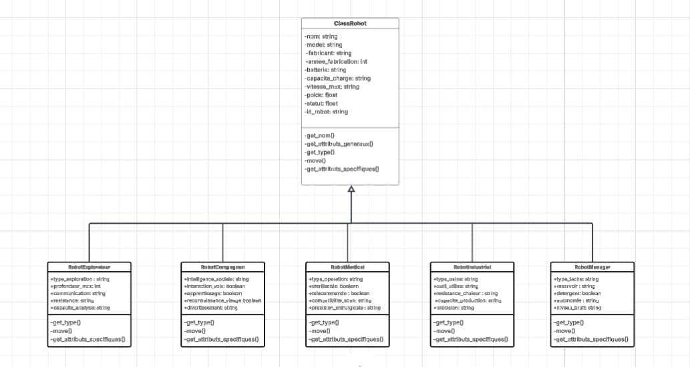

Dans un contexte mondial où la robotique devient un pilier fondamental de l’innovation technologique, les compétences en programmation orientée objet (POO) et en conception de systèmes modulaires sont devenues essentielles. Le Tekbot Robotics Challenge 2024, organisé au sein d’un cadre académique dynamique, offre aux étudiants une opportunité concrète de mobiliser ces compétences dans un projet cohérent, pratique et professionnalisant.
Ce projet consiste à concevoir une application Python qui permet de simuler la création et la gestion de différents types de robots, chacun ayant des caractéristiques propres, tout en partageant une base commune. L’approche choisie repose sur une architecture modulaire, orientée objet, facilitant l’extensibilité, la réutilisabilité et la maintenabilité du code. Chaque type de robot est défini dans un fichier spécifique, héritant d’une classe mère abstraite, et mettant en œuvre ses propres attributs et comportements.
La présente documentation vise à fournir une vue d’ensemble complète et structurée du projet : depuis les objectifs pédagogiques jusqu’à l’implémentation technique détaillée de chaque composant. Elle s’adresse aussi bien aux étudiants débutants en programmation qu’aux développeurs expérimentés désireux d’examiner une architecture propre, segmentée et respectant les bonnes pratiques de développement logiciel. Les explications sont accompagnées de codes commentés pour favoriser l’apprentissage et la compréhension progressive.
2. Objectif du projet
L'objectif est de construire une application Python capable de gérer dynamiquement des objets représentant des robots spécialisés. Chaque robot possède des attributs généraux (nom, fabricant, etc.) et spécifiques selon son type (médical, industriel, etc.). Le programme doit :
Permettre à l'utilisateur de créer différents types de robots via un menu interactif.
Assurer la validation des données entrées par l'utilisateur.
Stocker les robots créés en mémoire et les sauvegarder dans un fichier texte.
Implémenter le principe d’héritage, d’abstraction, d’encapsulation et de polymorphisme.
Le projet est organisé autour de fichiers spécialisés :
main.py – Point d’entrée de l’application
ClassRobot.py – Classe de base abstraite
Robot.py – Démonstration simplifiée
Gestion.py – Fonctions de menu, sauvegarde, saisie
Menager.py, Indistruel.py, etc. – Définissent chaque type de robot
5. Fichier : ClassRobot.py
Ce fichier définit la classe abstraite Robot qui sert de base à toutes les autres. Il introduit des attributs généraux comme le nom, modèle, fabricant, année de fabrication, batterie, capacité, vitesse, poids et statut. Il utilise uuid pour générer un identifiant unique et impose des méthodes abstraites à implémenter dans les sous-classes.
Particularité : Ce fichier est central, car tous les robots héritent de cette structure.
6. Fichier : Robot.py
Fichier simplifié pour l’initiation à la POO. Il contient la classe abstraite Robot avec les classes concrètes FlyingRobot et WheeledRobot, illustrant le polymorphisme. Il inclut aussi la classe ClientGestion pour créer plusieurs robots à la volée.
Différence : Ce fichier est plus pédagogique et simplifié par rapport à ClassRobot.py.
7. Fichier : Gestion.py
Ce fichier regroupe les fonctions utiles pour l’interaction utilisateur, la validation des entrées et la sauvegarde.
Fonction : demander_attributs()
Elle permet de demander à l’utilisateur les attributs généraux et spécifiques d’un robot avec des validations intégrées.
def demander_attributs(generaux, specifiques):
reponses = []
for attr in generaux:
if attr == "id_robot":
continue
# Validation pour certaines valeurs spécifiques
...
for attr in specifiques:
if attr in ["interaction_voix", "detergent", ...]:
val = input(f"{attr} (oui/non): ").lower() == "oui"
else:
val = input(f"{attr} : ")
reponses.append(val)
return reponses
Fonction : sauvegarder_robots()
Enregistre les informations de tous les robots créés dans un fichier texte.
def sauvegarder_robots(robots):
with open("robots_crees.txt", "w", encoding="utf-8") as f:
for robot in robots:
f.write(f"=== {robot.get_type()} ===\n")
for cle, val in robot.get_attributs_generaux().items():
f.write(f"{cle} : {val}\n")
for cle, val in robot.get_attributs_specifiques().items():
f.write(f"{cle} : {val}\n")
f.write("\n")
Fonction : afficher_menu()
Affiche les différents types de robots disponibles à la création :
def afficher_menu():
print("\n=== Types de robots disponibles ===")
print("1. Robot Ménager - Pour les tâches domestiques")
print("2. Robot Industriel - Pour les usines")
...
print("6. Quitter le programme")
8. Fichier : main.py
Ce fichier est le centre du programme. Il orchestre le menu, appelle les fonctions de gestion, et crée les objets robots.
Initialisation
Liste les attributs généraux des robots et un dictionnaire des classes avec leurs attributs spécifiques :
Affiche le menu, récupère le choix utilisateur, valide les données et crée l'objet correspondant :
while True:
afficher_menu()
choix = input("Choisissez un type de robot : ").strip()
if choix == "6":
sauvegarder_robots(robots_crees)
break
if choix in robot_classes:
nom, classe, specifiques = robot_classes[choix]
attributs = demander_attributs(generaux, specifiques)
robot = classe(*attributs[:9], **dict(zip(specifiques, attributs[9:])))
robots_crees.append(robot)
robot.move()
Conclusion : C’est le cœur fonctionnel du projet. C’est ici que tout converge : saisie, traitement, instanciation, démonstration, sauvegarde.
9. Robot.py – Exemple simplifié de POO
Le fichier Robot.py est une version d’introduction aux principes de la programmation orientée objet. Il ne fait pas directement partie du cœur du projet principal, mais sert de base de démonstration avant d’aborder les classes avancées du fichier ClassRobot.py.
Contenu du fichier
Il contient :
Une classe abstraite Robot avec les attributs name et model
Deux classes filles : FlyingRobot et WheeledRobot
Une classe ClientGestion pour gérer la création et l’affichage des robots
from abc import ABC, abstractmethod
class Robot(ABC):
def __init__(self, name, model):
self._name = name
self._model = model
def get_name(self):
return self._name
def set_name(self, name):
self._name = name
def get_model(self):
return self._model
def set_model(self, model):
self._model = model
@abstractmethod
def move(self):
pass
def __str__(self):
return f"Robot {self._name}, modèle {self._model}"
class FlyingRobot(Robot):
def move(self):
return f"{self._name} vole dans les airs avec agilité."
class WheeledRobot(Robot):
def move(self):
return f"{self._name} roule rapidement sur le sol."
class ClientGestion:
def __init__(self):
self.robot_list = []
def creation_robot(self):
print("....... Création du Robot .......")
try:
response = int(input('Entrer 1 pour FlyingBot ou 2 pour WheeledRobot : '))
if response in [1, 2]:
nom = input("Entrer le nom : ")
model = input("Entrer le modèle : ")
robot = FlyingRobot(nom, model) if response == 1 else WheeledRobot(nom, model)
self.robot_list.append(robot)
else:
print("------ Entrée invalide -----")
except ValueError:
print("------ Entrée invalide -----")
def count_robot(self):
try:
number_robot = int(input('Entrez le nombre de robots à créer : '))
return number_robot
except ValueError:
print("------ Entrée invalide -----")
return 0
client_gestion = ClientGestion()
number_of_robots = client_gestion.count_robot()
for _ in range(number_of_robots):
client_gestion.creation_robot()
if client_gestion.robot_list:
print("\nListe des robots créés :")
for i, robot in enumerate(client_gestion.robot_list, 1):
print(f'Robot N° {i}')
print(robot)
print(robot.move())
else:
print("\nAucun robot valide n'a été créé.")
Objectif pédagogique
Ce fichier est utile pour :
Comprendre l’usage d’une classe abstraite et l’obligation d’implémenter move()
Expliquer le principe du polymorphisme (même méthode move(), comportements différents)
Initier à la gestion dynamique d’objets via la classe ClientGestion
Bien que simplifié, il prépare à la logique complète du projet principal basé sur ClassRobot.py.
9.1 Menager.py
Ce fichier contient la définition de la classe RobotMenager, qui hérite de la classe Robot dans ClassRobot.py. Cette classe est destinée à simuler des robots domestiques : aspirateurs intelligents, laveurs de sol, robots de repassage, etc.
type_tache : détermine la spécialisation du robot (ex : nettoyage, repassage...)
reservoir : capacité du réservoir d’eau ou de déchets
detergent : booléen indiquant si le robot peut utiliser des produits nettoyants
autonomie : durée de fonctionnement en heures
niveau_bruit : bruit émis en décibels (dB)
Cette classe montre comment enrichir un modèle de base en ajoutant des attributs spécifiques à un contexte d’usage concret, ici l’entretien domestique.
9.2 Fichier : Indistruel.py
Le fichier Indistruel.py contient la classe RobotIndustriel, conçue pour exécuter des tâches spécifiques dans des environnements industriels. Ces robots sont souvent utilisés sur des chaînes de production, pour du soudage, de l’assemblage ou de la manipulation d’objets lourds. Cette classe hérite de Robot et ajoute des attributs propres à l’usage industriel.
Chaque attribut correspond à une exigence du domaine industriel. Par exemple, precision définit la tolérance en millimètres, tandis que capacite_production indique le nombre d’unités traitées par heure.
9.3 Fichier : Medical.py
Ce fichier définit la classe RobotMedical, conçue pour exécuter des tâches en environnement hospitalier. Il implémente des attributs spécifiques à la précision et à la sécurité des interventions chirurgicales.
Le fichier Compagnon.py définit un robot d’assistance ou de compagnie. Ce type de robot est utilisé dans l’accompagnement des personnes âgées, l’éducation, ou même comme assistants personnels intelligents. Cette classe est axée sur l’interaction humaine et intègre des fonctions liées à la communication et à l’adaptation comportementale.
Cette classe est idéale pour illustrer la programmation orientée vers les interactions intelligentes. Elle pose aussi les bases pour des extensions futures intégrant des modules de traitement du langage naturel ou de reconnaissance faciale avancée.
10. Diagramme UML
Le diagramme UML ci-dessous montre la hiérarchie des classes, avec Robot comme base et les différents types de robots comme sous-classes :

11. Conclusion
À travers le Tekbot Robotics Challenge 2024, les étudiants ont eu l’opportunité de s’immerger dans une expérience de développement logiciel complète. Le projet abordé permet d’appliquer concrètement les principes de la programmation orientée objet tout en répondant à un cahier des charges réaliste, centré sur la création, la personnalisation et la gestion de plusieurs types de robots.
La qualité du code repose sur une architecture modulaire bien pensée : chaque fichier a une responsabilité claire (single responsibility), les interactions sont maîtrisées et les dépendances limitées. Les validations de données, la séparation entre logique métier et interface utilisateur (console), ainsi que l’usage de méthodes abstraites favorisent un haut niveau de maintenabilité.
Cette documentation a été pensée comme un guide pratique, technique et pédagogique. Elle peut servir de support d’apprentissage à ceux qui découvrent la POO, mais aussi de point de départ pour des évolutions plus ambitieuses : ajout d’interface graphique (Tkinter, PyQt), base de données SQLite, déploiement d’API REST avec Flask ou FastAPI, ou encore intégration avec des capteurs et microcontrôleurs dans un contexte réel de robotique embarquée.
En somme, ce projet est bien plus qu’un exercice scolaire. Il constitue une base solide pour tout développeur ou ingénieur souhaitant explorer les fondements d’une architecture orientée objet propre, testable et évolutive dans le domaine de la robotique logicielle et des systèmes intelligents.